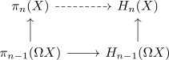

hurewicz theorem and serre spectral sequence
Proposition
Proof
induction basis
- do the case for $\pi_1(X)$ abelian.
- first hurewicz
induction step
consider the fiber sequence
\begin{align*}
\Omega X \rightarrow * \rightarrow X
\end{align*}
and the resulting serre spectral sequence: We will indicate the case $n = 2$, the
\begin{displaymath}
\begin{sseqpage}[homological Serre grading,
clip = false,
xscale = 1.0,
yscale = 1.0,
%x axis gap=1.0cm,
%y axis gap=1.0cm,
classes = {draw = none}
]
\class["H_1(\Omega X)"](1,0)
\class["H_2(X)"](0,2)
\d["\cong"]2
\end{sseqpage}
\end{displaymath}which has to be an isomorphism, so that the sequence converges against $*$.
Then this shows the isomorphism
